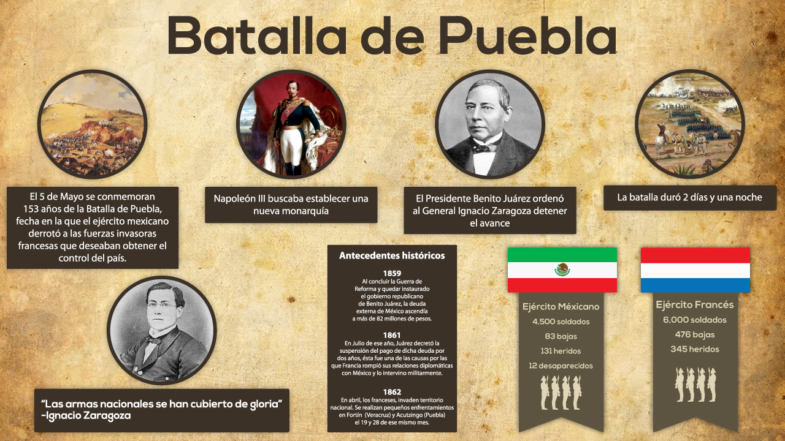

Batalla de Puebla en 1862


 1
1 2
2 3
3 4
4 6
6 7
7 8
8 10
10 12
12 13
13 14
14 15
15 16
16 17
17 18
18




Una de las más grandes batallas que ha librado el país tuvo lugar en la ciudad de Puebla, la batalla del 5 de mayo de 1862. En la zona de los fuertes, en el mismo escenario del pasado, se ubica el museo interactivo. El recorrido por el museo utiliza la tecnología más puntera para narrar las acciones militares y la biografía de héroes nacionales como Negrete, Díaz y Zaragoza. Pantallas táctiles, proyecciones en 3-D y contenidos interactivos descargables en dispositivos ofrecen una experiencia única al visitante.


Los fuertes de Loreto y Guadalupe son unas antiguas edificaciones militares que se encuentran en la ciudad de Puebla. Originalmente se trataba de capillas construidas en lo alto de un cerro Acueyametepec, que fueron reconstituidas a principios del siglo XIX como fortificaciones con finalidades militares. Sirvieron como escenario principal tanto en la batalla como en el sitio de Puebla, durante la Segunda Intervención Francesa en México. Declarados como patrimonio histórico de México, actualmente albergan museos de sitio.

Conmemora la gloriosa Batalla de Atlixco, del 4 de mayo de 1862, cuando al frente de las tropas estaba el general Antonio Carvajal, quien junto con Antonio Rodríguez Bocardo, Pedro Lira, Doroteo León y Miguel Lira y Ortega, combatieron a los conservadores que se aproximaban para reforzar al ejército francés, instalado ya en Puebla